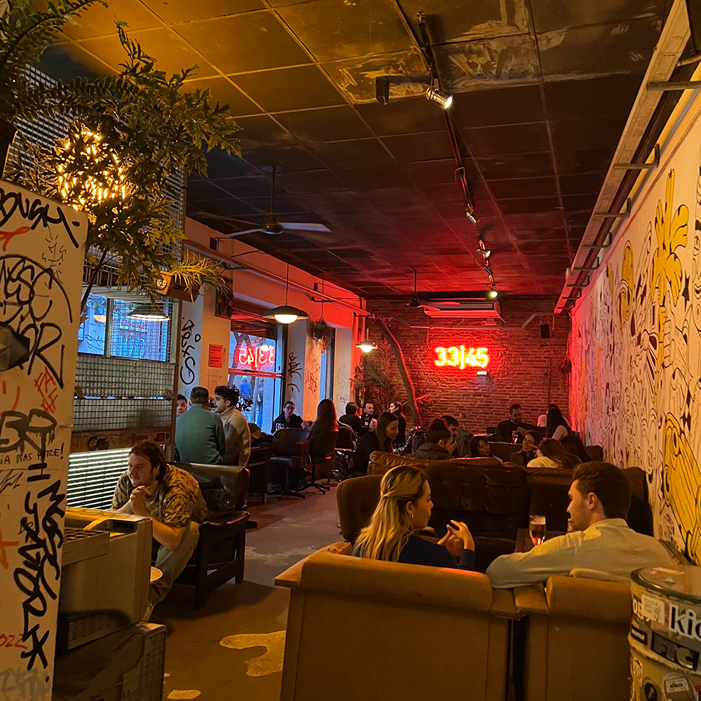

Sagrada familia
De sagrada familia is het laatste en bekendste werk van Antoni Gaudi, Hij is de architect
waar de stad bekend om staat. Dit is geen secret hotspot, maar echt een toeristen uitje.
Wel één die het absoluut waard is. Alle foto's en plaatjes van de Sagrada zijn mooi, maar niks te
vergelijken met de ervaring in het echt.
Bunkers
De bunkers is de beste plek om met je vrienden de zonsondergang te kijken
met 360 graden uitzicht over de mooie stad, zie je de zon achter de horizon verdwijnen. Dit is een
plek waar vrienden en studenten bij elkaar komen onder het genot van een drankje en een heerlijk uitzicht.
Er wordt gegeten en gedronken, muziek geluisterd en gespeeld en gelachen en gedanst.

Bar 33/45
Bar 33/45 heeft twee locaties in Barcelona, beide met een gezellige sfeer en industriele
inrichting. Deze plek is uitstekend voor studenten die een gezellige avond in een bar willen
doorbrengen of een leuke plek om heen te gaan voor het uitgaan. De prijzen zijn laag, het personeel
is erg vriendelijk en de muziek is er om op te dansen.